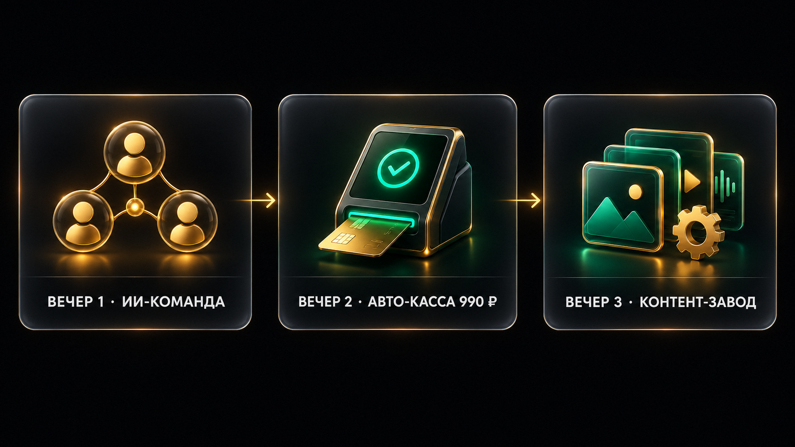
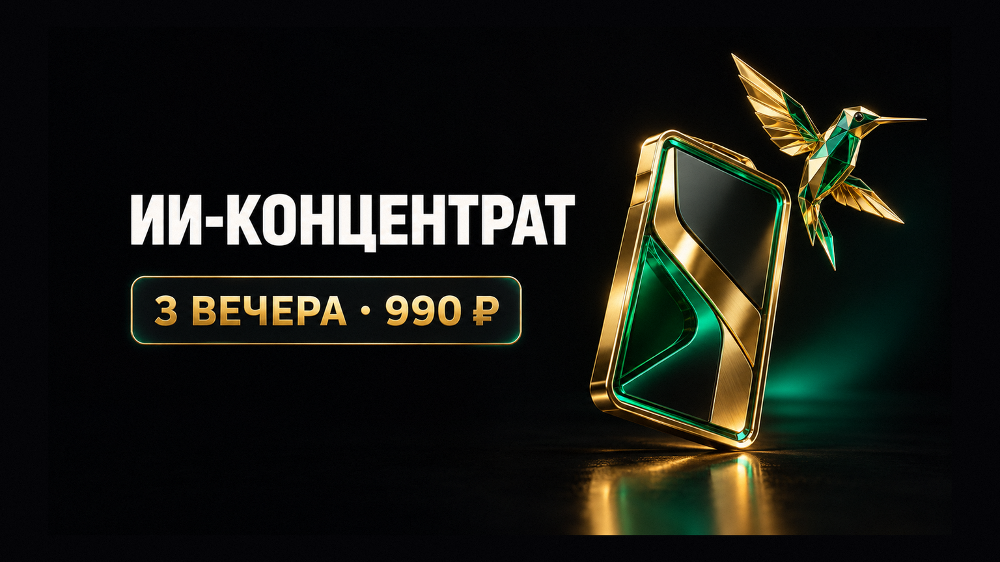
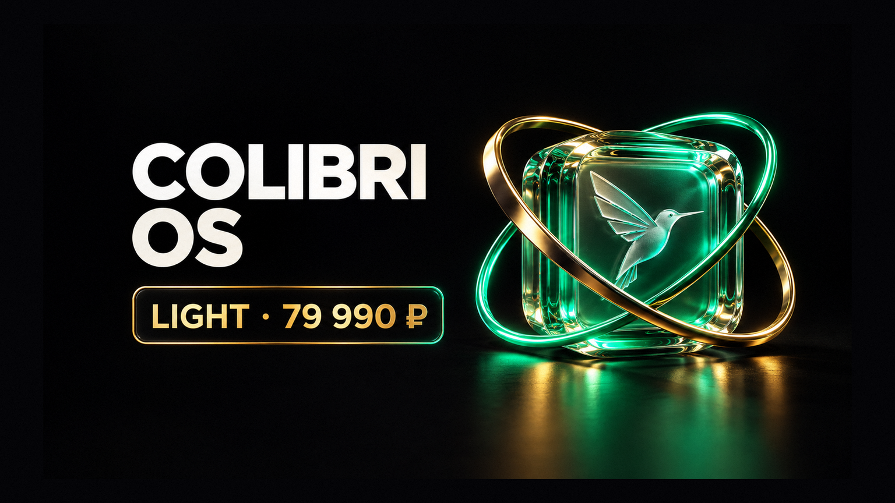
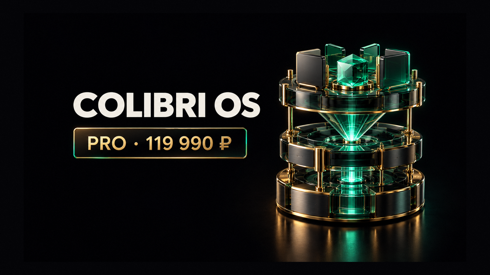
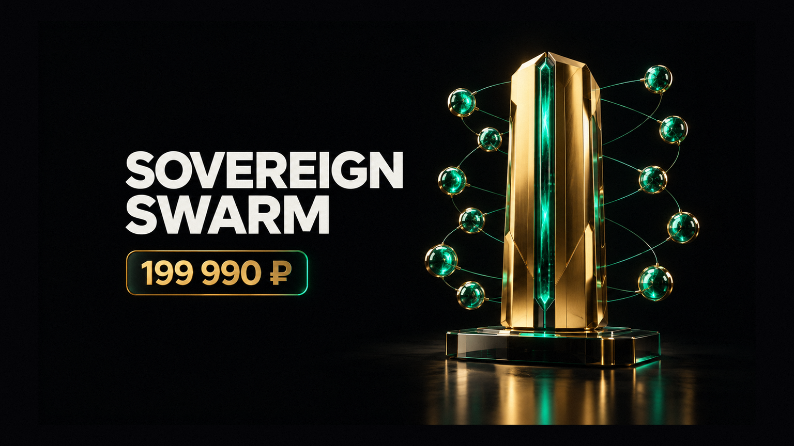

Клиенты приходят только по рекомендациям
Хочется понятного пути от знакомства до заявки, а не ожидания следующей рекомендации.
Цифровой практикум на 3 вечера: пошаговые видеомодули в записи, готовые ИИ-шаблоны и ИИ-диагностика. Проходите самостоятельно в удобное время и повторяйте шаги на своей задаче.
100% автономный формат, без расписания и ожидания группы. СБП и карты на странице оплаты. Мастер-группа приобретается отдельно.

Начните с учебной задачи. Решение о выпуске материала остаётся за вами.
Выбери ситуацию, которая похожа на твою. Начать можно с одной задачи, не перестраивая весь бизнес.
Хочется понятного пути от знакомства до заявки, а не ожидания следующей рекомендации.
Нужно проверить, как контент и статьи могут дополнять платное продвижение твоего продукта.
Идея, сценарий, пост и публикация живут отдельно и требуют постоянного переключения.
Хочется сначала проверить предложение и путь до заявки, а не ждать большой цифры подписчиков.
Ответы в чате есть, но их ещё нужно связать с продуктом, материалами и следующим действием.
Нужен способ выбрать одну гипотезу и проверить её на конкретной задаче.
Посчитайте, сколько времени занимает рутина. Это ваши числа и ваши допущения, а не обещание заработка или экономии.
Для команды: люди × часы в день × стоимость часа × 22 рабочих дня
Один продукт, страница и понятный путь до оплаты
Заявки × конверсия × прибыль с заказа. Это отдельная гипотеза, не прибавленная к стоимости рутины
Общая база проекта хранит контекст задачи. Пять агентов делят работу, а ты проверяешь результат и разрешаешь внешние действия.
Контекст, план, передача задач и проверка результата — в одной базе проекта.
Помогает сформулировать предложение и проверить, кому оно нужно.
Готовит сценарий, пост и план карусели из общей темы.
Готовит полезную статью и следующий шаг для читателя. Публикация и индексация не гарантируются.
Связывает кодовое слово, Telegram-бота, предложение, оплату 990 ₽ и выдачу после подтверждения платежа.
Пример расписания: собирает статусы задач и готовит отчёт. Время и разрешения настраиваются отдельно.
Это демонстрация маршрута, не переписка покупателя и не подтверждение оплаты.
Пять агентов выше — обзор ответственности. Двенадцать внутренних ролей ниже — более подробная учебная схема, а не замена двенадцати сотрудников.
От отдельного запроса — к первой связанной задаче.
Ты задаёшь вопросы, переносишь ответы и собираешь процесс вручную.
Одна повторяемая задача получает свой рабочий порядок, входные данные и проверку.
Несколько задач связаны общей базой проекта, передачей результатов и проверкой перед выпуском.
Это уровни организации работы, а не прогноз дохода. Результат зависит от задачи, исходных данных и практики.
Три вечера — структура самостоятельной практики, а не даты занятий. Смотрите пошаговые видеомодули в записи, применяйте готовые ИИ-шаблоны и проверяйте результат. Полное внедрение зависит от сложности и доступов.

На выходе: выбранная задача, подготовленный исходник и первый учебный результат
Ваше решение остаётся последнимНа выходе: понятная схема заявки, оплаты и выдачи. Подключение платежей требует отдельной настройки.
Доступы и платежи только по разрешениюНа выходе: сценарий, монтажная карта, карусель, пост и статья с одним целевым действием
Публикация после вашего «ДА»Дополнительный модуль в записи предусмотрен в VIP. Точный состав и доступность проверь в карточке Концентрата перед оплатой.
Шесть модулей платформы и три вечера практикума с бонусом — разные разделы программы. Модуль 01 открыт, 02–06 закрыты до подтверждённой оплаты.
Бесплатно вы получите расчёт потерь и одно узкое место. Практические модули 02–06 остаются закрыты до подтверждённой оплаты.
Бесплатно: стоимость рутины, свободная мощность и одно узкое место
Открыто · Tier 0Знания проекта и роли команды
Закрыто · платный доступ от 990 ₽Материалы и контроль качества
Закрыто · платный доступ от 990 ₽Путь от интереса к платному продукту
Закрыто · платный доступ от 990 ₽Коммерческий процесс и передачи
Закрыто · платный доступ от 990 ₽Приёмка, интеграции и развитие
Закрыто · платный доступ от 990 ₽Начни с диагностики бесплатно или выбери VIP Концентрат за 990 ₽. Записи и готовые шаблоны — в платном практикуме.

100% автономный цифровой практикум от Татьяны и Дениса
Татьяна Колибри ведёт Light. Денис помогает с форматами Pro, Sovereign Swarm и внедрением для команды.
Для Light предусмотрен переход на Pro в течение 48 часов по условиям акции. Условия и право на переход необходимо подтвердить до оплаты.
Личное ознакомительное окно на этом устройстве, не резерв участия

Ведущий: Татьяна Колибри
Собрать процесс самому с опорой на готовую архитектуру

Ведущий: Денис
Бизнес, контент и воронки в одном управляемом процессе

Ведущий: Денис
Архитектура и разбор процесса с Татьяной и Денисом
*Ознакомительный таймер не создаёт права на скидку и не перезапускается при обновлении страницы. Оплата, срок и условия апгрейда требуют подтверждённой оферты. Ни один тариф не гарантирует доход
Для команд с повторяемыми задачами и владельцем процесса. Сначала диагностика, границы данных и измеримый пилот, потом масштабирование
Диапазон внедрения: 300 000–600 000 ₽
Состав работ, этапы и сроки фиксируются отдельно. Заявка на диагностический разговор не означает покупку внедрения
Без вопросов о покупательском бюджете. Без передачи рабочих доступов
Примеры интерфейсов ColibriOS, демонстрационные AI-сцены и учебные истории. Подтверждённые результаты покупателей на этой странице не представлены.
Сценарный расчёт из твоих чисел. Посчитать свою задачу ↗
Диагностика и границы доступа. Открыть карту ↗
Выбор продукта и переход к защищённой оплате. Посмотреть оформление ↗
Восемь демонстрационных монтажей и AI-сцен. Звук включается только по вашему нажатию.
Учебные сценарии с ИИ-персонажами. Это не отзывы подтверждённых покупателей.
Самостоятельный рабочий маршрут по методу Колибри.
Помогает с идеями, голосом и подачей контента.
Связывает задачи, заявки, оплату и техническую архитектуру процесса.
Решения, доступы и проверка материалов остаются у тебя.
На странице есть короткие демонстрационные клипы. Они не заменяют отдельный четырёхминутный разбор. Пока можно посмотреть программу и примеры систем.
Формат, техника, оплата и границы работы с данными.
В удобное время. Три вечера — структура самостоятельного практикума, а не расписание занятий.
Это структура самостоятельного цифрового практикума: три учебных этапа с видеомодулями в записи, готовыми ИИ-шаблонами и ИИ-диагностикой. Проходите в своём темпе, начинайте в удобное время. Полноценное внедрение зависит от сложности, доступов и приёмки
Для старта достаточно описать свой процесс и проверить результат. Интеграции, данные, права и платежи требуют технической настройки. На B2B-маршруте это отдельный объём работ
Нет. Результат зависит от задачи, исходных данных, доступов и практики. Учебные истории не являются результатами покупателей.
Двенадцать обозначает роли рабочего процесса, а не обещание сократить двенадцать штатных единиц. Владелец отвечает за решения, доступы, проверку и внешние действия
Сейф адаптирован под Telegram Mini App, включая безопасные отступы, нижнюю навигацию и отключение вертикальных свайпов в поддерживаемых версиях. В обычном браузере основные функции тоже работают
Подключения и сторонние подписки могут потребовать отдельной настройки и оплаты. Их состав нужно проверить для выбранной задачи.
Подключение платежей зависит от конфигурации продавца. Оформление проверяет доступность платёжного обработчика. Пока продавец и платёжный маршрут не подтверждены, оплата не активируется; карточка заказа остаётся локальным черновиком
Видеомодули в записи, готовые ИИ-шаблоны и ИИ-диагностика для самостоятельной практики на три вечера. Состав и доступность бонусного модуля 4 проверь перед оплатой.
Диагностика и одно узкое место. Практические модули 02–06 не открываются бесплатно.
Расчёты выполняются в браузере. Форма никуда не отправляет контакт без явного согласия и настроенного защищённого обработчика. В автономном режиме можно скачать заявку и передать её самостоятельно
Концентрат в записи: три вечера самостоятельной практики, готовые ИИ-шаблоны и ИИ-диагностика. VIP — 990 ₽
Кодовое слово для маршрута: ХОЧУ / СТАРТ